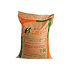

Fertilizer
Ratio
: Coconut APM (D)
:12:06:32

1. Fertilizer should be applied in a circular pattern, 1 foot away from the base of the plant in the first 1 – 1 ½ years.
2. Distance of application from the base of the tree should gradually increase with growth.
Write Inquiry